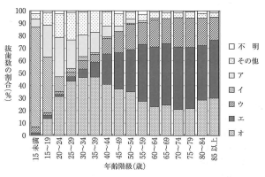

| 項目 | 内容 |
|---|---|
| 実施主体 | 8020推進財団 |
| 調査年 | 第1回：2005年、第2回：2018年 |
| 調査方法 | 全国の協力歯科医院で7日間に抜歯した永久歯を調査 |
| 順位 | 原因 | 割合 |
|---|---|---|
| 1位 | 歯周病 | 37.1% |
| 2位 | う蝕 | 29.2% |
| 3位 | 破折 | 17.8% |
| 4位 | その他 | 7.6% |
| 5位 | 埋伏歯 | 5.0% |
| 6位 | 矯正 | 1.9% |
前回調査より高齢化している
年齢階級別抜歯の主原因別にみた抜歯数の割合（永久歯の抜歯原因調査、2018年）を図に示す。
エはどれか。1つ選べ。
ただし、ア〜オはa〜eのいずれかに該当する。

【解説】
注意：50〜54歳まではう蝕が多く、55歳以降は歯周病が最多となる